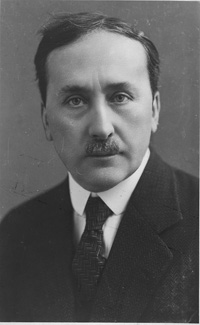
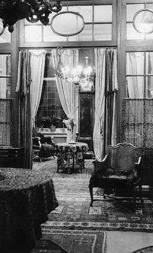
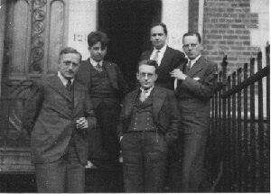
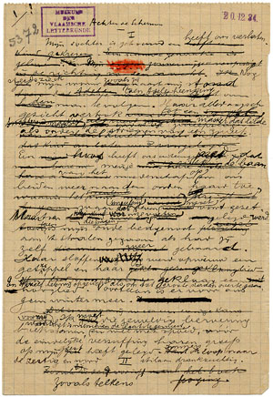
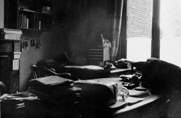
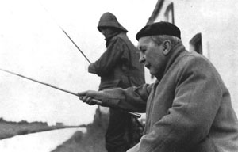

Willem Elsschot, begin jaren dertig
"Het leven zelf bezorgt mij het onderwerp, maar de kunst is het gieten in een klassieken vorm […]. De kwaliteit van de geut, daar gaat het om," verklaarde ooit Willem Elsschot. Gewild of ongewild heeft hij met deze en andere vaak geciteerde uitspraken zijn reputatie een aardig handje geholpen. De "grootste schrijver sinds Multatuli" (Karel van het Reve) wordt alom geprezen om zijn stijl, die uitblinkt door doeltreffende eenvoud en natuurlijke soberheid. Elsschot staat bekend als de auteur van een klein, maar fijngeslepen oeuvre.
Steevast ook benadrukte de schrijver dat die schijnbare eenvoud niet vanzelf uit zijn pen was gevloeid. Schrijven noemde hij "galeienwerk": "Als ik het geschreven heb, begint het pas goed. Dan ga ik schrappen en bijvoegen; vooral schrappen. Zo veel tot ik op een gegeven moment tegen mezelf zeg: nu moet je ophouden anders blijft er helemaal niets meer over. Ik schrijf met de hand en na al dat schrappen en bijvoegen ga ik het tikken. En dan begint het gedonder opnieuw: weer schrappen, weer bijvoegen." Volgens Elsschot kon een veeleisend schrijver – "dát vooral is nodig" – zijn tekst "nooit voldoende zuiveren, snoeien, louteren", want: "Van twee nuances is er maar één de juiste, en als ze alle twee juist zijn, is er maar één de mooiste. Die moet men kiezen. Gewoonlijk is het de kortste."1
De talrijke uitspraken in interviews en brieven hebben het beeld van Elsschot als een "gecondenseerd stilist" niet alleen bepaald. Ook in het werk zelf is "stijl" voortdurend onderwerp van discussie, of het nou gaat om de analyse van de tekst van een uithangbord (Villa des Roses), het opstellen van advertenties en studies voor het "Algemeen Wereldtijdschrift" (Lijmen), het kiezen van een geschikte firmanaam (Kaas) of om het vinden van de juiste toon in een toespraak voor slechthorende generaals van een militair beroepshof (Pensioen). En in bijna iedere roman worden brieven geschreven, én geanalyseerd. Daarnaast heeft Elsschot zich in een drietal teksten expliciet over stijl uitgesproken, en ook deze worden met grote regelmaat en instemming aangehaald als het over zijn eigen schrijverschap gaat. Zoals de bekende "Inleiding" tot Kaas (1933): "Wie het slot niet uit het oog verliest zal van zelf alle langdradigheid vermijden omdat hij zich telkens afvragen zal of ieder van zijn details wel bijdraagt tot het bereiken van zijn doel. En hij komt dan spoedig tot de ontdekking dat iedere bladzijde, iedere zin, ieder woord, iedere punt, iedere komma het doel nader brengt of op afstand houdt." Hetzelfde geldt voor de "Opdracht" en "Achter de Schermen", twee sleutelteksten die Elsschots andere grote roman uit 1933 omsluiten: Tsjip. Daarin worden achtereenvolgens het schrijven (en de rechtvaardiging daarvan) en het schrijfproces gethematiseerd. Althans ogenschijnlijk.
"Véél hooger dan de leeuwerik"

Het interieur van Elsschots huis, Lemméstraat 21 te Antwerpen
Elsschots fascinatie voor stijl manifesteert zich met name als hij in 1933, na een impasse van bijna tien jaar, op aandrang van Jan Greshoff zijn pen weer oppakt en Kaas schrijft. Kort erna ontstaat Tsjip. Bij het schrijven van beide boeken speelt de vorm een dominante rol, zo blijkt overvloedig uit de brieven die Elsschot in de periode van ontstaan aan zijn literaire vrienden stuurt. Zo krijgt Greshoff te horen dat hij niet teveel belang moet hechten aan de handelstransactie in Kaas: "Het dramatische van de dingen zit immers niet in wat er gebeurt maar in den indruk die het gebeurde op den toeschouwer maakt. [...] Het komt er voor een schrijver slechts op aan zijn persoonlijk tragisch gevoel (om het even waar het om gaat) zoo in woorden te brengen dat het kan overgaan in de ziel van derden, althans van derden die er bevattelijk voor zijn."2 En over Tsjip schrijft hij aan Menno ter Braak: "Mijn bedoeling is geweest een zeer alledaagsche, zoo terre à terre mogelijke gebeurtenis door intensiteit lezenswaard te maken. Met andere woorden, van niets iets te maken. Zonder inhoud een boek te schrijven."3 Natuurlijk was er wel degelijk een inhoudelijke inspiratiebron geweest: de geboorte van Elsschots eerste kleinkind Jan Maniewski, die in de correspondentie door zijn vertederde grootvader wordt aangeduid als "die kleine smeerlap van een kleinzoon" of "dat kind dat hier rondloopt". Maar ten diepste was die inhoud voor de schrijver Elsschot toch van ondergeschikt belang: "Of iets een eenvoudige familiehistorie is dan wel een bezoek aan de Hel, maakt op mij niet den minsten indruk."4
Blijkbaar was Elsschot er niet helemaal gerust op dat zijn bedoeling overal even goed zou worden begrepen, want niet lang na deze brief (hooguit een maand) stuurde hij Greshoff de tekst van een "korte inleiding [die] Tsjip bevattelijker zal maken voor den middelmatigen lezer".5 In deze "Inleiding" (later omgedoopt tot "Opdracht") vergelijkt hij het schrijven met reizen. Zodra hij pen op papier zet, is hij voor onbepaalde tijd vertrokken en wanneer hij weer thuiskomt is hij verwonderd over de vanzelfsprekendheid waarmee zijn vrouw en kinderen hem ontvangen. Beschaamd en diep gegriefd komt hij tot het besef dat aan het "dolen" een eind moet komen en dat hij zijn plicht moet doen "als een doodgewoon mannetje dat ik tenslotte ben". "Ik heb dus mijn taak als razend aangepakt, mijn ridderorde weer opgestoken en mijn zaken gedreven als een die nooit dat land heeft bereisd." Het plichtsbesef wordt echter ruw verstoord als op een heilloze dag "dat mormel van een kleinzoon" zijn intrede doet. "Toen heb ik mezelf betrapt bij 't sluipen naar den zolder waar ik mijn staf heb opgezocht in stof en spinrag. […] Ik heb eerst met de keel een toonladder geschraapt en dan met zijn kraaien ingestemd. En mijn beenen jeuken. Kom, jongen, vooruit is de weg. Mogen vrouw en kinderen mij vergeven dat ik hen een laatste maal verloochen voor die vermaledijde heerlijkheid waar een gouden vogel jubelt, véél hooger dan de leeuwerik."
"Een hoopje vuil in de feestzaal"
Het verhaal uit de "Opdracht" biedt de mogelijkheid om "gindsche land" óók te lezen als het literaire landschap waarin een schrijver zich begeeft. Het bereizen van dit paradijs is een tocht zonder vooraf te bepalen einddoel (er is sprake van "trekken", "dolen" en "dwalen"), maar de verwachtingen zijn hooggespannen. Evenwel, "ginder ver" is geen plaats voor "kerels met een schorre stem, die weten hoe 't in 't leven gaat": "Ook dáár voelt zoo een zich ten slotte verlaten. Ook dáár is men eindelijk nog slechts een vieze vlek in een onbezoedeld landschap, een hoopje vuil in de feestzaal." Het allegorische verhaal lijkt perfect van toepassing op Elsschots positie in de literaire "feestzaal" van de jaren dertig, met name in de kring rond Forum. Met Kaas en Verzen van Vroeger was hij het tijdschrift binnengehaald als auteur "voor wie Forum gemaakt leek",6 maar die reputatie was niet bepaald onwankelbaar. Met name Tsjip zou "een vieze vlek in een onbezoedeld landschap" blijken te zijn.
Het begon met een vervelend misverstand over de publicatie van het verhaal. Elsschot had namelijk niet alleen Greshoff op de hoogte gesteld van zijn jongste creatie, maar ook de Forum-redacteuren Menno ter Braak en Marnix Gijsen.7 De laatste hapte onmiddellijk toe en kreeg van Elsschot de toezegging dat hij Tsjip aan Forum zou afstaan. Elsschot deed dat in de veronderstelling dat Greshoff het daarmee eens was, en niet wetende dat deze inmiddels redacteur van Groot Nederland was geworden en zich op zijn zachtst gezegd gepasseerd voelde. Elsschot vond dat hem niets verweten kon worden: "je had mij best iets kunnen mededeelen over al dat onlekkers. Door jou verdomde schuld zit ik tusschen de scherven." Persoonlijk kon het hem "absoluut niet schelen waar het verschijnt", maar hij kon zich "onmogelijk terugtrekken. Maar 't volgende boek is voor Gr. Ned. of beter gezegd voor het tijdschrift van uw keuze (ik dacht dat FORUM dat was)."

De 'oude' Forum-redactie ten huize van Jan Greshoff, v.l.n.r. Everard Bouws, Maurice Roelants, J. Greshoff, E. du Perron en Menno ter Braak
Elsschots onwetendheid van de literaire verhoudingen spreekt in deze en andere brieven boekdelen: hij was niet op de hoogte van het getouwtrek tussen beide tijdschriften over een mogelijke fusie (ook niet van Greshoffs frustratie toen dat mislukte), noch van de redactiesplitsing bij Forum in een Nederlands en Vlaams deel die daarop volgde, en ook kon hij bij de verschillende namen niet de juiste gezichten en hoedanigheden plaatsen. Zo had hij met Maurice Roelants tijdens een zomervakantie in Sint Idesbald al eens uitgebreid kennisgemaakt, om er later achter te komen "dat gij de Roelants van Forum waart".8 In zijn brieven valt Elsschot dan ook regelmatig van de ene in de andere verbazing.
Ronduit verbijsterd is hij als het Vlaamse deel van de Forum-redactie Tsjip afwijst op grond van twee hoofdstukken, die hij op aanraden van Greshoff juist aan Tsjip had toegevoegd om het verhaal een "philosophische tint" te geven. Eén van de gewraakte passages is de scène waarin Laarmans zijn dochter snel even het concept van de heilige drievuldigheid uitlegt, zodat ze via een spoedprocedure gedoopt kan worden en met de katholieke Pool Bennek voor de kerk kan trouwen. Nadat Marnix Gijsen de publicatie van Tsjip uit naam van zijn mederedacteuren had bevestigd, maakte Elsschot een aantal slapende honden wakker met de mededeling dat hij "gevreesd had dat het boek minder in den smaak zou vallen van een redactieraad met een Katholieke overtuiging".9 Gijsen verklaarde per omgaande dat hij inderdaad ("Nu gij dit punt aanraakt") bezwaar had tegen de betreffende passages: "Zou het U veel kosten dit te schrappen?" Deze brief zou het begin zijn van een hardnekkige strijd, waarbij Elsschot op een gegeven moment zelfs de "elegante oplossing" aandroeg om Tsjip alsnog aan Groot Nederland af te staan. Ook heeft hij nog even overwogen om de "aardige, lieve passage" in Forum te laten vervallen (hij zou "die beeldenstormerij" dan in de boekuitgave wel weer goedmaken), maar dat was slechts een tijdelijke zwakte. Toen hij bemerkte dat Gerard Walschap de grootste aanstichter van de kritiek was – zonder Tsjip te hebben gelezen – en andere redacteuren helemaal geen principiële bezwaren hadden, hield hij voet bij stuk. "W[alschap] zit achter de schermen," zo liet Elsschot aan Greshoff weten, en Gijsen had hem dat opgebiecht ("avait finalement décidé de manger le morceau"). "Ik geloof dat dit de eerste maal is dat Forum het verlangen uitdrukt dat een passage geschrapt wordt, niet om zijn litteraire minderwaardigheid, maar wel om de wenschen te voorkomen van eenige katholieken. Het wordt dan ook tijd dat FORUM zijn pretentieuzen naam verandert, want binnen dat perk zal nooit meer iets uitgevochten worden."
Een dokter onderzoekt zijn eigen buik
Het is de vraag of de "Opdracht" het door Elsschot gewenste effect – "Tsjip bevattelijker […] maken voor den middelmatigen lezer" – heeft gehad: in de vele besprekingen van Tsjip werd er tenminste nauwelijks aandacht aan besteed. Alle waardering voor de eenvoud en waarachtigheid van het verhaal konden niet verhinderen dat Elsschot zich onbegrepen bleef voelen, met name omdat het "l'art pour l'art van Tsjip" aan sommige recensenten was voorbijgegaan. "Moet dat niet tot nadenken stemmen?", vroeg hij zich in een brief aan Greshoff vertwijfeld af. Het onbegrip had Elsschot kennelijk niet alleen tot nadenken maar ook tot schrijven gestemd, want op 12 november 1934 meldde hij "weer bezig" te zijn: "'t Wordt iets voor ter Braak, du Perron e.c. Je herinnert je de inleiding tot Kaas? Iets in dien aard, maar veel langer en naar aanleiding van Tsjip".10
Twee weken later was de tekst waar Elsschot op doelde, "Achter de Schermen", af. In de overgeleverde versies ervan is geen spoor terug te vinden van een verwijzing naar Ter Braak en Du Perron (Elsschot zou zijn studie zelfs niet aan hen opdragen maar aan Jan van Nijlen). De tekst vertelt in zekere zin hetzelfde verhaal als de "Opdracht": de komst van de kleinzoon en het effect daarvan op de grootvader, waarbij nu expliciet duidelijk wordt dat die gebeurtenis de aanleiding tot schrijven is: "Ik moet die beroering boekstaven." Vervolgens wordt zin voor zin ontrafeld hoe dat "boekstaven" in zijn werk gaat, waarbij Elsschot de lezer deelgenoot maakt van de meest fijnzinnige overwegingen die bij de totstandkoming van de uiteindelijke versie van de "Opdracht" een rol (zouden) hebben gespeeld.
Bij de eerste publicatie in boekvorm, in de tweede druk van Tsjip (1936), werd "Achter de Schermen" aangeprezen als "een buitengewoon geestig hoofdstuk, dat een zeer goeden kijk geeft op de manier waarop Elsschot schrijft." En zo is het sindsdien ook altijd gelezen, niet in de laatste plaats ook op aangeven van Elsschot zelf. Hij omschreef zijn tekst plechtig als een "dissertatie over stijlleer": "Telkens vertrekkend vanuit een vulgaire dus minderwaardige zin, tracht ik de overwegingen onder woord te brengen welke geleid hebben tot de betere tekst."11 Meer recht deed hij zijn tekst toen hij de daarin ondernomen exercitie tegenover een collega-schrijver als volgt relativeerde: "Ik heb daarin geprobeerd mijn eigen stijl te ontleden. Hebt gij dat ooit geprobeerd? 't Geeft een gevoel alsof een dokter zijn eigen buik onderzoekt."12
"Het manuscript van Tsjip bestaat niet meer"

Eerste pagina kladhandschrift 'Achter de Schermen'
Hoe betrouwbaar "Achter de Schermen" is als ontleding van het schrijfproces van de "Opdracht" valt niet gemakkelijk te zeggen. De enige bron die hierover definitief uitsluitsel zou kunnen geven ontbreekt: het manuscript van de "Opdracht". Heeft Elsschot het, evenals het manuscript van Tsjip, in stukken gescheurd toen hij de "Opdracht" had voltooid en overgetypt? Of heeft hij zich er pas een jaar later van ontdaan toen hij "Achter de Schermen" had geschreven? Als dat zo is, dan heeft hij doelbewust willen voorkomen dat iemand de beschrijving van de feiten ("Achter de Schermen") naast het bewijs (het manuscript van de "Opdracht") zou kunnen leggen. Aan de andere kant: waarom heeft Elsschot dan niet ook andere sporen uitgewist? Van "Achter de Schermen" heeft hij nota bene zelf het kladhandschrift aan het pas opgerichte Museum der Vlaamsche Letterkunde (het huidige AMVC-Letterenhuis) gestuurd, op 19 december 1934.13 Dit handschrift blijkt meer prijs te geven dan de maskerende auteur zou hebben gewild. Al vanaf de eerste pagina valt op hoeveel Elsschot heeft geschrapt om tot een eerste versie te komen. En dat is vreemd, want als hij het originele manuscript van de "Opdracht" nog bezat, dan hoefde hij de tekst toch maar over te schrijven? De openingszin van de "Opdracht" ziet er bijvoorbeeld in het manuscript van "Achter de Schermen" als volgt uit:
"Ik kom thuis van
deeen reisen allen hebben weer gedaan alsof iken vind alles voor mij gereed staan. Vrouw en kinderen hebbenmijgedaan alsof ik niet weg was geweest.Alles stond gereed tegen dat ik binnen zou komen.Zij hebben mij welkom geheetenen mijn vrouw heeftmijmijn souper opgediend". Punt.
De talrijke doorhalingen lijken erop te wijzen dat Elsschot het schrijfproces achteraf heeft gereconstrueerd. Eerst stond er: "Ik kom thuis van de reis." Elsschot schreef dus aanvankelijk de uiteindelijke versie van de eerste zin. Die veranderde hij met terugwerkende kracht in een "eerdere" versie door het bepaalde lidwoord te schrappen en te vervangen door "een" ("Ik kom thuis van een reis") om vervolgens te kunnen uitleggen waarom hij uiteindelijk voor "de" koos.
Die achterwaartse reconstructie blijkt ook uit het eerste typoscript van de "Opdracht". Het betreft weliswaar een voltooide versie – het is de tekst zoals Elsschot die in de loop van mei 1933 aan Jan Greshoff heeft gestuurd –, maar toch bevat ze een paar interessante varianten, bijvoorbeeld in de beschrijving van de intrede van de kleinzoon:
Tot ik op dien heilloozen dag dat mormel van een kleinkind in huis gewaar werd, met zijn gekraai en zijn bloote billen.
In "Achter de Schermen" wil Elsschot ons doen geloven dat hij eerst "heerlijke dag" in plaats van "heilloozen dag" had geschreven, dat hij pas naderhand op "dat mormel van een kleinkind" is gekomen, en dat hij die kleinzoon – om ook nog iets te zien te geven – pas in laatste instantie van een paar blote billen heeft voorzien. Voor het geval de hierboven geciteerde typoscriptversie dit nog niet voldoende mocht tegenspreken volgt hier de eerste versie van de passage volgens het handschrift van "Achter de Schermen", met speciale aandacht voor de wederom veelzeggende doorhalingen:
[T]ot ik op een
heiheerlijken dagdatmormeldie schat van een kleinzoon in huis gewaar werd, diemet zijn gekraai en zijn bloote billenaanmijnhun dwingelandij een eind heeft gemaakt.
De magie der "creatie"
In "Achter de Schermen" is zoals gezegd geen spoor terug te vinden van een expliciete verwijzing naar "ter Braak en Du Perron", voor wie Elsschot zijn tekst zou hebben geschreven. De toevoeging "e.c." ("en consorten") doet evenwel vermoeden dat hij met deze tekst een vermomde kritiek op de groep rond Forum heeft willen schrijven. Uit de correspondentie blijkt dat Elsschot zich in de eerste plaats geroepen voelde zich te verdedigen tegenover Ter Braak, die zijn opvattingen in verschillende recensies en brieven had geëxpliciteerd. Zijn bespreking van Kaas, onder de veelzeggende titel "De persoonlijkheid van Willem Elsschot", strookt volledig met de poëticale principes die hij samen met E. du Perron en Maurice Roelants had verwoord in de befaamde inleiding van het eerste nummer van Forum:
Wij kiezen uitsluitend partij tegen de vergoding van den vorm (de magie der "creatie", zoals men dat in Nederland noemt, terwijl men in Vlaanderen van verliteratureluren der kunst heeft gesproken) ten koste van de creatieven mensch […]. Welke wonderen zich ook bij het scheppingsproces mogen afspelen: zij schijnen ons dan eerst van belang, wanneer de persoonlijkheid van den kunstenaar zich voor ons in zijn werk bevestigt.
Als exponent van de "vent"-richting mist Ter Braak zowel in Kaas als Tsjip de figuur van Boorman en daarmee Elsschots "satyre in grooten stijl": "De preciesheid, het onfeilbare observatievermogen blijft hetzelfde, maar het onderwerp wordt “huiselijker”, en dat spijt mij aan den eenen kant, omdat een schrijver als Elsschot m.i. tot nog gedurfder concepties in staat is. Als satyre steekt boven deze “huiselijkheid” b.v. uit de prachtige bekeeringsscène uit “Tsjip”: Adèle moet als de weerga tot het katholicisme worden omgeschakeld. Hier haalt Elsschot ook in de dimensies verreweg het beste van wat hij te zeggen heeft."14
In reactie hierop (in een brief aan Greshoff) uit Elsschot zijn teleurstelling over het feit dat Ter Braak kennelijk alleen belang hecht aan het gedeelte "waarin zoo al niet een sociale strekking, dan toch een phylosophische overtuiging tot uiting komt" en dat het "l'art pour l'art" van Tsjip aan hem is voorbijgegaan. En dat raakt in Elsschots ogen de vraag naar wat de functie van kunst zou moeten zijn:
Moet kunst, in tijden van wording als deze, in tijden van ellende en verdrukking, […] geen partij kiezen? En moet "l'art pour l'art" niet tijdelijk begraven worden tot de worsteling beslecht is, tot voor de massa een tijd is aangebroken waarin zij aan "l'art pour l'art" iets heeft? Partij kiezen, zelfs ten koste van het kunstgehalte?15
In plaats van de strijdbijl te begraven schrijft Elsschot een tekst waar de huiselijkheid van afdruipt en waarin "de magie der “creatie”" tot op het bot gefileerd wordt. Voor de goede verstaanders – Ter Braak en Du Perron voorop – zou duidelijk moeten zijn dat hij zich niet zomaar als "vent" voor de kar van Forum wilde laten spannen.
"De spijsvertering der ideeën"
Ter Braak zou Elsschot zelfs wel eens op het idee voor "Achter de Schermen" gebracht kunnen hebben. Met name de voorpublicatie in Forum van het eerste hoofdstuk van Politicus zonder partij bevat een aantal prikkelende uitspraken over "het schrijverschap", waarop "Achter de Schermen" een min of meer rechtstreekse reactie lijkt te geven.16 In de allereerste plaats stelt Ter Braak dat schrijven geen "vak" meer is zoals de schilderkunst of de muziek, omdat "ons uitdrukkingsmiddel" algemeen toegankelijk is geworden: "wij hebben geen schildersacademie bezocht, geen contrapunt gestudeerd, wij hebben ons zelfs niet in bochten gewrongen als onze beste afnemers, de acteurs, kortom, wij zijn eigenlijk zonder techniek". Vervolgens veegt hij de vloer aan met schrijvers die zich tóch achter hun "woordkunst" en "taalmagie" verschuilen en wier "armoede van geest […] door het accent van de zingende zaag moet worden goedgemaakt". Ter compensatie stellen deze schrijvers alles in het werk om toch de schijn hoog te blijven houden:

Elsschots werkkamer aan de Lemméstraat
Het schrijversatelier wordt gefingeerd, telkens en overal weer; het moet den lezer worden gesuggereerd, en met des te overtuigender hypnotische gebaren, omdat het de gedaante heeft van een ordinaire leeken-schrijftafel! Weg met die ordinaire tafel, dat verraderlijke allemansvloeiblad, dat potje Parker Dufold kantoorinkt!
Natuurlijk erkent Ter Braak dat onder het schrijven "honderden varianten" opduiken, dat "gesluierde beelden" zich kunnen verscherpen, dat een schrijver "poging op poging" waagt om de juiste toon te vinden, maar hij verzet zich tegen schrijvers die koketteren met "de vlijt en het mysterie van het “vak”". Hij wantrouwt ook "meesterwerken" die met de "schijn van olympische verhevenheid en objectiviteit de ordinaire schrijftafel verlaten". Hij wil "een genie zien bewegen – bewegen achter den starren volledigheidsschijn, dien het ons heeft voorgetooverd in zijn meesterwerken; ik aanvaard niemands groote en schoone woorden, voor ik hem duidelijk gebogen heb zien zitten over zijn schrijftafel, schrijvend aan zijn verkapte mémoires." Zijn voorkeur voor mémoires verklaart hij vervolgens aan de hand van een opmerkelijk plastische metafoor:
Ik zoek de mémoires op, omdat ik de spijsvertering der ideeën wil zien onder de schijnsolide, glanzende opperhuid van het werk, omdat het werk altijd meer verbergt dan het onthult, wanneer men het neemt als werk en niet als masker. Ik geef daarom de voorkeur aan boeken, die de sporen van het onvolledige en aanvankelijke durven dragen, en aan schrijvers, die zich sterk genoeg gevoelen om den schijn van harmonie en objectiviteit opzettelijk te vermijden. Het is verrukkelijk, de spijsvertering oprecht te hooren werken, de omzetting mee te maken, als invité (en niet als spion!) aanwezig te zijn bij een zoo weinig officieel schouwspel[.]17
Ook de drang tot schrijven is een prominent thema in het eerste hoofdstuk van Politicus zonder partij. Opnieuw verwijst Ter Braak naar lichamelijke processen wanneer hij zich hardop afvraagt:
Moet er weer een boek ontstaan? Moet er aan de "productie" weer een exemplaar worden toegevoegd? Is het dan niet mogelijk afstand te doen van den schrijfdrang en een eerzaam burger te worden met hen, die brieven schrijven? Wat "eerzaam"! men behoeft niet eens eerzaam te worden, wanneer men leeft zonder schriftelijke stofwisseling, men kan dan zelfs royaal en zwijgend het zijne denken van de eerzame auteurs van het vak!...
Wat de reden is om tóch te gaan schrijven, illustreert Ter Braak met een voorbeeld dat Elsschot moet hebben geraakt. Wanneer een "bijzonder dom mensch met een vooroordeel als een kropgezwel (b.v. het l'art pour l'art of de evolutie) mij in de onschuld van zijn gemoed een uiteenzetting aanbiedt van zijn levensbeschouwing" is hij aanvankelijk geneigd deze "domheid" toe te lachen als een "oude scepticus", tot hij toch besluit zijn ideeën onder woorden te blijven brengen, "met de begripswellust van philosophen en het anecdotisch pleizier van romanschrijvers, alsof ik mijn plaats in de gelederen der vaklieden weer goedsmoeds had ingenomen[.]"
"More brains"
Wie jaargang 1934 van Forum doorbladert, komt de door Ter Braak aangesneden kwesties in verschillende gedaanten tegen. Zo blijkt de tegenstelling schrijver-burgerman – die ook in de "Opdracht" al prominent aanwezig is – een favoriet onderwerp, bijvoorbeeld bij Gerard Walschap:
Alle kunstenaars voelen zich chronisch als ratés. Telkens als zij ophouden met schrijven, transsubstantieeren zij zich onbewust weer in het vulgaire burgermannetje, dat zij immers evenzeer als anderen zijn en loeren ontzet en argwanend naar wat zij daar weer eens gelapt hebben. Gelijk een eerbaar huisvader, thuisgekomen in een staat van complete dronkenschap, die hem onnoozel-weg had beslopen, nooit meer gerust te stellen is over wat hij wel mag geluld hebben in presentie van zijne minderjarigen, blijven zij ongerust over hun geschrijf. Zij consulteeren hun beredeneerde kunstopvattingen, mitsgaders hun geweten en stellen vast dat zij al schrijvend er eigenlijk andere opvattingen op nahielden. Waren de graphologische bewijzen niet absoluut en afdoend, zij zouden de schuld op een vreemde schuiven. Daarbij genoten zij bij 't schrijven van een luciditeit, die alles zoo enkelvoudig, vanzelfsprekend en onbetwijfelbaar maakte, dat het hun in nuchteren toestand van gecompliceerde, sceptisch aangelegde intellectueeltjes, zeer verontrust. Aan artistiekerigheid en inspiratie wenschen zij dat de "leek" intens zal blijven gelooven, maar zij zelf houden het er voor dat ijver, werkzaamheid, een lamp, een pijp en solied vakmanschap, meer waard zijn dan een koppel muzen. Vandaar chronische ongerustheid, gevoelsbevliegingen dat alles mislukt is, een ongeneeslijke hypochondrie, die waarlijk den stiel bederft.
Uit zijn brieven blijkt dat Elsschot Forum met bijzondere belangstelling volgde, met een mengeling van verwondering ("Wie is Freud waar in Forum zoo dikwijls over gesproken wordt?")18 en kritiek, met name op wat er bij voortduring gedelibereerd werd over zijn geliefde l'art pour l'art. Tegen deze achtergrond vallen enkele passages in "Achter de Schermen" extra op. Met name de scène waarin de auteur twijfelt welke gerechten hij de vrouw des huizes zal laten opdienen, is opvallend uitvoerig. De keuze voor haring is snel gemaakt, maar "om de keus mogelijk en de vraag logisch te maken" moeten er nog meer "kandidaten aantreden". In de eerste versie duurt de afweging tussen nieren, hersenen en lever maar een vijftal regels, maar in een later stadium (op een apart toegevoegde pagina) heeft Elsschot de passage uitgebreid, waarbij hij de te maken keuzes van de volgende motiveringen voorziet:
Neen, geen nieren. Grooter, hooger op! […] Wie is die bleeke daar, met zijn krulhaar?
– Hersens".
Walglijk genoeg. Maar de regisseur vind[t] het ongewoon op een huiselijke tafel. Meer iets voor een restaurant. En die dikke, die door zijn knieën zakt?
– Lever".
Ja, lever is goed. Lever van een oud beest, als die te krijgen is.
In de context van "dit litterair landschap", dat een bladzijde verder ter sprake komt, zou dit fragment een knipoog kunnen zijn, niet alleen naar de "spijsvertering" en de "stofwisseling" van Ter Braak, maar ook naar de herhaaldelijk in Forum gedane oproep om "more brains" in de literatuur. De oproep is ontleend aan een toespraak van August Vermeylen uit 1927 ("More brains! In 's hemelsnaam meer hersens!"). Met name de Vlaamse literatuur bracht anno 1934 nog de "misselijkste producten" aan folklorisme, stijlziekte en woordkunst voort, aldus Raymond Herreman. Ook bij andere Forum-auteurs stond de ratio hoger aangeschreven dan het gevoel. "Ik geloof dat de komende generatie teveel met het hoofd schrijft en leest, te weinig met het hart. Misschien zijn hun hoofden voller dan de onze, hun harten minder gevuld?", aldus de algemene reactie van Elsschot op dit verschijnsel. Hij voelde niets voor de "diepzinnigheid" en "filozofie" die van hem verwacht werd, en dus "kan ik die niet geven. Misschien ben ik niet meer van mijn tijd […]."19
"Aan Jan van Nijlen"
Met het gevoel niet meer van zijn tijd te zijn – of, anders gezegd, buiten de literaire feestzaal te vallen – kan Elsschot zich hebben herkend in zijn vriend Jan van Nijlen, en wellicht is dat een van de redenen geweest om "Achter de Schermen" aan hem op te dragen. Ook hier zou Forum hem wel eens op het idee gebracht kunnen hebben. In de oktober-aflevering van 1934 werd namelijk een portret van de vijftigjarige "ambtenaar-dichter" gepubliceerd, van de hand van Greshoff, waarin Van Nijlen wordt neergezet als iemand die zich volledig afzijdig houdt van de literaire orde:
Jan van Nijlen heeft nooit concessies gedaan. Hij heeft nooit iemand nageloopen. Hij heeft nooit iets gevraagd. Zijn reputatie laat hem steenkoud en het geld heeft niet den minsten invloed op hem. Hij schrijft eenvoudig omdat hij het niet laten kan en dus voor zijn plezier. Hij doet het met zorg en toewijding, maar hij laat er zich nimmer op voorstaan, omdat hij tot in het diepst van zijn ziel doordrongen is van de betrekkelijkheid der dingen.
Hoewel deze afwijzende houding hem volgens Greshoff van het grote publiek vervreemd had, heeft Van Nijlen nooit geleden onder de miskenning door zijn "tijdgenoten": "Hij heeft altijd de stilte gezocht en verheugde zich dus slechts om de stilte om hem heen."

'Aan litteratuur doe ik voorloopig niet meer'
Na alle gedoe rond Tsjip zocht ook Willem Elsschot de stilte op. "Aan litteratuur doe ik voorloopig niet meer. Ik ben namelijk aan het visschen geraakt", schrijft hij in een brief aan Greshoff. "Indien jij soms in de buurt van Antwerpen iemand met een vijver kent, dan houd ik mij voor introductie aanbevolen." Evenals Van Nijlen zou echter Elsschot het schrijven niet kunnen laten, hoezeer hij er zelf ook steeds – "zoals telkens" – van overtuigd was "dat dit mijn laatste geschrijf zal zijn". Maar daarvoor was de lokroep uit "gindsche land" toch regelmatig te sterk of de "beroering" te geweldig:
Na zekeren tijd ontstaat een innerlijke leegte die zich uit in zenuwachtigheid, ontevredenheid, doelloosheid, onrechtvaardigheid jegens die mij omringen. Onbewust ga ik doen alsof zij schuld hadden aan mijn niet-schrijven. Ik begin het leven nutteloos te vinden zoodat ik, in alle oprechtheid, soms naar den dood verlang. […] Tot ik mij eindelijk weer aan 't schrijven zet. Dat schrijven vervangt het geloof waaraan het mij totaal ontbreekt. Dan is het gedaan met die zwartgalligheid, mijn gezin slaakt een zucht van verlichting. Ik ben tevreden, zou alle dagen bloemen meebrengen voor mijn vrouw, of voor andere vrouwen, geef breede fooien en aalmoezen. Ik verbeeld mij dat dit sentiment niet zeer verschillend kan zijn van de vreugde die b.v. een goede timmerman gevoelen moet wanneer hij, na jaren gedwongen werkloosheid, eindelijk weer hout en een schaafbank krijgt.20
"Nu nog wat schmink"
In "Achter de Schermen" heeft Elsschot zijn werkplaats naar het toneel overgebracht. Het idee hiervoor is pas geleidelijk aan gekomen. Aanvankelijk was de tekst vrijwel geheel geschreven vanuit het perspectief van een auteur die zich bekommert om het effect van zijn "boek" op "de lezer", pas in tweede instantie kwam Elsschot op de theatrale setting, compleet met een "scène", een "regisseur" en "het publiek". De eerste verwijzingen naar het theater verschijnen pas vanaf p. 11 in het manuscript, met de veelzeggende frase: "'t Is hier ten slotte toch maar een schouwburg." Maar zodra Elsschot die metafoor had gevonden, werkte hij ze helemaal uit: "Nu nog wat schmink, want zoo staat die leugen daar toch te naakt." Ook het typoscript smukte hij flink op om in plaats van "de lezers" vanaf nu "de toeschouwers te epateeren als de boeren op de kermis met een kind zonder hoofd". De "regisseur" krijgt een prominente dubbelrol toebedeeld, als iemand aan wie advies gevraagd kan worden ("Zou ik niet liever vragend vertellen, regisseur?") maar ook als iemand die zich hinderlijk met "het stuk" bemoeit ("Nu vindt die regisseur weer…"). Wanneer "dat mormel van een kleinzoon" ten tonele verschijnt en daarmee de handeling in gang zet, is het uitgerekend ook de regisseur die zich afvraagt hoe dat kind hem dat "gelapt" kan hebben. Juist op dat moment snoert de ik-figuur hem de mond: "Eenvoudig genoeg, regisseur, want terwijl ik schrijf hoor ik zijn gekraai onder de tafel."
Deze ik-figuur ten slotte blijft de meest raadselachtige figuur op het toneel. De lagen schmink worden dikker en dikker om zijn identiteit te verbergen. In het manuscript wordt hij afwisselend aangesproken als "Laarmans", "Elsschot", "vader" of "man" en lijkt hij personage, schrijver en burgerman inéén. In het typoscript verdwijnt de naamsverwarring, maar niet de verwarrende rolverdeling. Voortdurend wordt "het publiek" op het verkeerde been gezet: "Net of ik verdwaasd op het toneel verschijn, de hand aan het hoofd, als een Hamletje." De "ik" vertoont zich echter niet alleen "als een Hamletje" maar ook als een bedreven Shakespeare. Daarmee trekt hij een scherm op dat grote delen aan het zicht onttrekt ("een scherm dat voor de waarheid staat", zoals het in het manuscript luidt), maar duidelijk is wel: achter het stilistische geweten dat de schrijver-ik in "Achter de Schermen" gefingeerd laat spreken, gaat óók de grijns van de satiricus schuil.21
1 De hier geciteerde uitspraken zijn ontleend aan Vic van de Reijt, "Interviews met Willem Elsschot. “Als je door de muze gebeten wordt, vloeit het zo wel uit de pen”." In: Het oog in 't zeil 1 (1983), afl. 2, p. 1-6, behalve de eerste, die afkomstig is uit een brief uit 1940, zie Willem Elsschot, Brieven. Bezorgd door Vic van de Reijt m.m.v. Lidewijde Paris. Amsterdam, 1993, p. 388 (in het vervolg aangehaald als Brieven).
2 Brieven, p. 102.
3 Brief aan Menno ter Braak, 20 april 1934 (Brieven, p. 179).
4 Brief aan Jan Greshoff, 20 april 1934 (Brieven, p. 180).
5 Ongedateerde brief aan Greshoff, [± mei 1934] (Brieven, p. 186). Er is geen reactie van Greshoff (of Ter Braak) op de "Inleiding" overgeleverd.
6 Lut Missinne, "De Vlamingen in Forum: een misverstand." In: Elke Brems e.a. (red.), Van "Hooger Leven" tot "De Vlag". Literatuuropvattingen in Vlaanderen (1920-1940). Leuven, 1999, p. 87-100 (het citaat op p. 97). Zie ook Koen Rymenants, Een hoopje vuil in de feestzaal. Facetten van het proza van Willem Elsschot. Diss. Leuven, 2004, p. 294.
7 Zie Brieven, p. 137 en p. 140. De hiernavolgende kwesties komen uitgebreider aan bod in Willem Elsschot, Tsjip/De Leeuwentemmer. Bezorgd door Peter de Bruijn, m.m.v. Wieneke 't Hoen en Lily Hunter. Amsterdam, 2003 (Volledig werk 6), p. 202-205 (in het vervolg aangehaald als VW 6). Met ingang van de derde jaargang (1934) werd de redactie van Forum gesplitst in een Nederlandse en een Vlaamse afdeling. Marnix Gijsen vormde samen met Raymond Herreman, Maurice Roelants en Gerard Walschap de Vlaamse redactie.
8 Brieven, p. 124.
9 Brief, 15 februari 1934 (Leen Van Dijck, "Onbevlekt ontvangen. Elsschot-aanwinsten in het AMVC." In: De parelduiker 6 (2001), p. 162-171). De hierna geciteerde brieven zijn te vinden in Brieven, p. 160-170.
10 Brieven, p. 194. Zie ook VW 6, p. 216-218.
11 Brieven, p. 693.
12 Brieven, p. 243.
13 Brieven, p. 204.
14 M[enno] t[er] B[raak], "Vertelkunst van Willem Elsschot". In: Het vaderland 6 november 1934, avondblad.
15 Brief, 28 november 1934 (Brieven, p. 195).
16 Menno ter Braak, "Een Schrijver na zijn Dertigste Jaar". In: Forum 2 (1933), afl. 12, p. 841-861 (de volledige tekst van deze en andere hierna geciteerde bijdragen uit Forum is te raadplegen via www.dbnl.org). Politicus zonder partij verscheen in april 1934 in boekvorm.
17 In vervolg hierop haalt Ter Braak de vergelijking tussen schrijvers en toneelspelers van stal. Schrijvers tonen niet hun werkelijke gezicht, maar een "soms alleszins geslaagd" masker en zijn daardoor "tot in hun eerlijkheid toneelspelers […] geworden". In dit verband is de geleidelijke introductie van de toneelmetaforiek in "Achter de Schermen" relevant.
18 Brieven, p. 183.
19 Brieven, p. 180.
20 Brieven, p. 388.
21 Voor een bespreking van de genese van "Achter de Schermen" en de manier waarop Elsschot in de coulissen van het literaire toneel laat kijken, zie ook Dirk Van Hulle, De kladbewaarders. Nijmegen, 2007.
Foto 1, 2 en 5: Collectie erven Elsschot
Foto 3: Collectie Letterkundig Museum, Den Haag
Foto 4 en 6: Collectie AMVC-Letterenhuis, Antwerpen